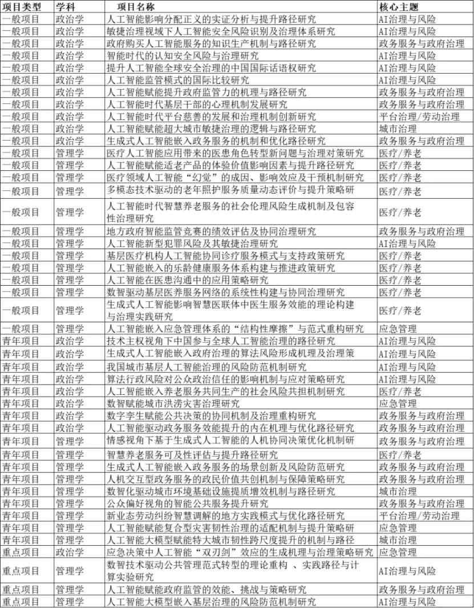
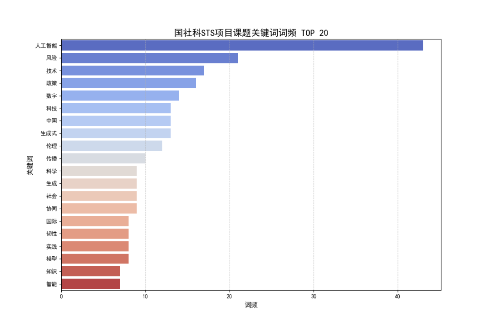

公共管理大数据分析：课程介绍
为什么学习公共管理大数据分析？
数字政府、智慧城市、平台治理和生成式人工智能的发展，使公共管理研究面对的数据来源、问题类型和研究工具都在发生变化。研究者不仅使用问卷和统计年鉴，也越来越多地接触行政记录、政策文本、政务留言、传感器数据、空间数据、网络关系数据以及互联网平台数据。
这种变化带来的挑战并不只是“数据变大了”，而是：
- 数据来源更加多源、异构和动态；
- 数据分析对象从结构化表格扩展到文本、空间和关系数据；
- 研究目标从描述现状扩展到预测、解释、因果识别和政策评估；
- 分析过程越来越强调代码化、可重复和可复现；
- 数据使用同时伴随隐私、偏见、算法责任和治理伦理问题。
因此，本课程并不把“大数据分析”理解为单纯学习更多算法，而是把它作为一种新的公共管理研究工作方式：
从公共管理问题出发，寻找合适的数据，选择适当的方法，形成可信的证据，并把分析结果转化为可以解释和沟通的公共管理知识。
公共管理问题 → 数据获取 → 数据整理 → 描述与可视化 → 预测与解释 → 因果识别 → 政策沟通
学习方法时首先问“这个方法解决什么问题”，而不是“这个方法够不够高级”。
数据科学为什么与公共管理有关？
近年来，人工智能、大模型、数字政府、算法治理、数据安全等议题已经成为公共管理和社会科学研究的重要前沿。下面的材料可以作为观察这一变化的一个窗口。


这些变化意味着，公共管理研究者需要具备的不只是传统统计分析能力，还包括数据获取、计算分析、可视化表达、算法理解以及数据伦理判断能力。
1 课程定位
本课程面向公共管理专业硕士研究生，围绕“数据赋能公共治理”展开，重点培养学生利用数据科学方法研究公共管理与公共政策问题的能力。
课程采用“理论讲授 + 案例讨论 + R 编程实操 + 课程项目”相结合的方式。课程不要求学生成为程序员或机器学习工程师，而是要求学生能够：
- 从公共管理问题出发识别可分析的数据问题；
- 判断需要的是描述、预测、解释还是因果识别；
- 获取、整理和探索真实公共管理数据；
- 根据研究问题选择适当的数据分析方法；
- 正确解释模型结果及其适用边界；
- 将数据分析结果转化为具有公共管理意义的证据和政策讨论；
- 认识数据使用、算法应用与人工智能辅助研究中的伦理和责任问题。
1.1 学习目标
完成本课程后，学生应能够：
问题与数据
- 理解公共管理“大数据”的基本概念、来源和特征；
- 将公共管理或公共政策问题转化为可分析的数据问题；
- 从政府开放数据、统计数据、行政数据、网络数据等来源寻找适合的数据；
- 识别数据产生过程中的缺失、偏差、代表性和测量问题。
数据分析
- 使用 R 完成数据导入、清洗、转换、探索和可视化；
- 理解训练集/测试集、交叉验证、过拟合、模型评价等机器学习核心概念；
- 掌握若干常用预测模型，并能够比较不同模型的表现；
- 初步理解文本、空间、网络和因果推断等方法分别适用于什么类型的公共管理问题。
解释与沟通
- 区分描述（description）、预测（prediction）与因果推断（causal inference）；
- 不把预测能力、相关关系直接解释为政策因果效应；
- 用图表、文字和简洁的模型结果向非技术受众表达分析发现；
- 讨论分析结论的政策含义、局限和适用条件。
研究规范与伦理
- 使用 Quarto 和代码建立较为可重复的分析流程；
- 对数据隐私、算法偏见、可解释性和数据安全保持敏感；
- 合理使用生成式人工智能辅助代码调试、学习和研究，并对最终分析结果承担验证责任。
2 课程的分析框架
面对一个公共管理问题，可以先判断希望回答的是哪一类问题。
| 分析目标 | 核心问题 | 常见方法 | 公共管理示例 |
|---|---|---|---|
| 描述 | 发生了什么？ | 描述统计、可视化、地图 | 哪些地区公共服务供给不足？ |
| 预测 | 接下来可能发生什么？ | 回归、树模型、随机森林、Boosting | 哪些诉求更可能升级为重复投诉？ |
| 解释 | 哪些因素与结果相关？ | 回归、变量重要性、可解释机器学习 | 哪些因素与公众满意度差异有关？ |
| 因果 | 如果实施某项政策，会发生什么？ | DID、RDD、匹配、合成控制等 | 一项环保政策是否真正降低了污染？ |
| 关系 | 谁与谁发生联系？结构如何？ | 网络分析 | 哪些部门在协同治理中处于核心位置？ |
| 空间 | 问题在哪里发生？是否存在空间关联？ | GIS、空间自相关、空间回归 | 公共资源配置是否存在空间不均衡？ |
| 文本 | 大量文本表达了什么？ | TF-IDF、主题模型、分类、Embedding/LLM | 12345投诉主要集中在哪些治理问题？ |
本课程强调 research question first。
不要因为学会了随机森林就一定使用随机森林，也不要因为某种模型看起来“更高级”就认为它更适合论文。方法是否合适，取决于研究问题、数据结构、识别条件和需要形成的证据类型。
3 课程内容与教学计划
课程内容将根据实际教学进度适度调整。已有网站材料会继续使用；文本分析、网络分析、因果推断和 AI 辅助研究等专题将在教学过程中逐步补充。
| 周次 | 主题 | 主要内容 |
|---|---|---|
| 1 | 课程介绍：公共管理进入数据科学时代 | 什么是公共管理大数据；数据科学能解决什么公共管理问题；描述、预测与因果的区别 |
| 2 | R、Quarto 与可重复研究工作流 | R/RStudio 基础；项目管理；代码与文档；AI 辅助学习与代码调试 |
| 3 | 数据获取与预处理 | 数据导入；政府开放数据；数据库与 SQL；网页数据；数据清洗 |
| 4 | 探索性分析与数据可视化 | 描述统计；EDA；ggplot2；面向政策沟通的可视化 |
| 5 | 机器学习 I：从统计模型到预测 | prediction vs. explanation；训练/测试；交叉验证；回归与正则化 |
| 6 | 机器学习 II：树模型与集成学习 | 决策树；随机森林；梯度提升；模型比较与变量重要性 |
| 7 | 无监督学习与数据结构发现 | PCA；聚类；如何发现数据中的类型与结构 |
| 8 | 文本即数据 | 文本预处理；词频与 TF-IDF；主题与文本分类；公共管理文本案例 |
| 9 | 文本分析、Embedding 与 LLM | 传统 NLP 与大模型辅助编码/分类的比较；可靠性与伦理 |
| 10 | 空间数据分析基础 | 空间数据对象；地图；空间关系；空间数据处理 |
| 11 | 空间分析模型 | Moran’s I、LISA、空间回归与空间溢出效应的基本理解 |
| 12 | 网络分析 | 节点与边；中心性；协同治理网络；政策共同发文与引用网络 |
| 13 | 因果推断与政策评估 | 反事实；选择偏差；DID、RDD、匹配、合成控制等基本思路 |
| 14 | 数据伦理与课程项目工作坊 | 隐私、偏见、算法治理；项目诊断；问题—数据—方法的一致性 |
| 15 | 课程项目展示与总结 | 项目汇报；同伴反馈；课程总结 |
目前网站中已有内容以 R 基础、数据处理与可视化、机器学习、空间分析 为主。尚未完成的专题不会影响前期教学，将采用滚动更新方式逐步补充。
4 教学方式
课程以实际问题和真实数据为主，理论与实践大体保持 40% : 60%。
4.1 课堂结构
典型的一次课程包括：
- 问题或案例：从一个公共管理现象开始；
- 概念与方法：说明为什么需要这种分析方法；
- R 演示：教师完成关键操作；
- 课堂练习：学生修改代码或分析新的数据；
- 解释与讨论：分析结果能够说明什么、不能说明什么；
- 课程项目连接：思考这一方法是否适合自己的项目。
4.2 软件与工具
课程主要采用：
- R / RStudio：数据整理、统计分析、机器学习和可视化；
- Quarto：形成代码、结果和文字一体化的可重复分析文档；
- Git / GitHub：用于课程网站和版本管理，学生可根据需要选用；
- SQL：理解数据库查询和较大规模结构化数据的处理；
- 生成式 AI 工具：辅助解释代码、排查错误、学习方法和改进表达。
Python、Spark、云计算和其他工具将根据专题需要介绍，但不是本课程前期学习的主要负担。
4.3 AI 辅助学习原则
允许并鼓励合理使用生成式人工智能辅助学习，例如：
- 解释不理解的 R 代码；
- 帮助定位报错；
- 比较不同方法的基本思想；
- 生成练习性代码后自行测试；
- 改进图表说明或文字表达。
但学生需要：
- 对提交的代码和结果能够解释；
- 对 AI 输出进行检查和验证；
- 不得用 AI 生成虚构数据、虚构文献或无法复现的分析；
- 在课程论文中对影响实质性分析过程的 AI 使用进行必要说明。
5 课程考核
5.1 成绩组成
| 项目 | 比例 | 说明 |
|---|---|---|
| 考勤与课堂参与 | 10% | 出勤、课堂练习与讨论 |
| 平时作业 | 40% | 围绕期末项目逐步推进 |
| 期末课程项目/论文 | 50% | 项目展示与最终论文 |
平时作业建议作为期末项目的不同阶段，而不是彼此独立的三份作业。
5.2 平时作业与项目推进
阶段一：研究问题与数据
围绕一个公共管理问题：
- 明确研究对象和研究问题；
- 检索相关研究；
- 寻找并说明可使用的数据；
- 初步判断适合的分析方法。
阶段二：数据整理与探索
- 完成数据清洗；
- 说明主要变量；
- 进行探索性分析；
- 制作能够说明问题的图表；
- 根据数据情况调整研究问题。
阶段三：方法应用与解释
- 根据研究问题选择适当方法；
- 完成模型或专题分析；
- 评价分析结果；
- 解释公共管理意义及方法局限。
随着课程内容增加，学生可根据自己的研究问题选择 机器学习、文本分析、空间分析、网络分析或因果推断 等不同路径，不要求所有项目使用同一种算法。
6 期末课程项目
6.1 项目目标
课程项目重点考察：
能否围绕一个真实的公共管理或公共政策问题，形成“问题—数据—方法—结果—解释”相互一致的分析过程。
项目不是算法展示。使用复杂模型本身不会自动获得更高评价。
6.2 选题方向
可以围绕以下方向，也可根据兴趣自行确定：
- 城市治理与城市运行；
- 环境治理与自然资源管理；
- 公共服务供给与资源配置；
- 数字政府与政府透明度；
- 公众投诉、政府回应与舆情治理；
- 政策文本、政府工作报告和法规文件分析；
- 部门协同与治理网络；
- 区域差异与空间治理；
- 公共政策效果评估；
- 教育、医疗、养老、交通等公共服务问题。
6.3 论文结构建议
- 引言：研究背景、问题和意义；
- 文献与分析思路：说明已有研究及本项目要回答的问题；
- 数据与研究设计：数据来源、变量/文本/空间或网络对象、分析方法；
- 分析结果：用必要的图表和模型结果回答研究问题；
- 讨论与政策含义：解释结果，并讨论对公共管理的启示；
- 结论与局限：总结发现，说明数据和方法的边界。
6.4 基本要求
- 正文原则上不少于 4000 字；
- 使用真实数据，并清楚说明数据来源；
- 至少使用一种课程涉及的数据分析方法，并说明为什么这种方法适合研究问题；
- 数据处理和分析过程应尽可能可复现；
- 图表用于支持论点，不用于简单展示分析过程；
- 重要表格建议采用三线表，并保持格式简洁；
- 数值保留到足以清晰表达结论的精度；
- 参考文献格式建议参照《公共管理学报》；
- 可以将冗长程序输出、补充模型和技术细节放入附录。
6.5 提交材料
电子版以“学号+姓名”命名并压缩提交，建议包括：
README或说明文件：说明各文件用途及项目运行方式；- 原始数据或数据获取说明；
- 清洗后的分析数据（如适用）；
- R/Python 程序脚本或 Quarto 文件；
- 课程论文 PDF/Word；
- 其他必要的图表、空间数据或辅助材料。
具体截止时间以课堂通知为准。
6.6 评估标准
| 维度 | 比例 | 重点 |
|---|---|---|
| 选题与问题意识 | 20% | 问题是否明确且具有公共管理意义 |
| 数据处理与方法应用 | 30% | 数据是否可靠；方法是否适合问题 |
| 结果分析与政策解释 | 30% | 是否正确解释结果并形成有依据的讨论 |
| 写作规范与表达 | 10% | 结构、图表、文字和引用是否清楚 |
| 创新性与完整性 | 10% | 数据、问题或分析路径是否具有一定新意 |
7 什么是公共管理“大数据”？
“大数据”不是一个仅由文件大小决定的概念。对于公共管理研究而言，更重要的是数据在规模、来源、结构、更新速度和分析复杂性等方面是否超出了传统分析方式能够方便处理的范围。
常见特征包括：
- Volume（规模）：观测量或文件规模较大；
- Velocity（速度）：持续、实时或高频生成；
- Variety（多样）：结构化、文本、图像、空间、网络等多种形式；
- Value（价值）：数据本身并不自动产生知识，需要分析和解释。
除此之外，公共管理数据还具有明显的领域特征：
- 多源性：来自不同部门、平台、组织和公众；
- 制度性：数据的产生受到行政流程和制度规则影响；
- 空间性：大量治理问题具有明确的空间位置和区域差异；
- 敏感性：经常涉及个人信息、行政行为和公共安全；
- 选择性：行政数据和平台数据通常不是为科研抽样设计的；
- 关联性：不同政策领域和治理主体之间存在复杂联系。
行政记录、平台数据或互联网数据即使规模非常大，也可能存在选择偏差、缺失、测量变化或制度性筛选。
Big data 并不会自动消除 bias。
8 公共管理中的主要数据来源
| 数据来源 | 典型数据 | 优势 | 常见问题 |
|---|---|---|---|
| 政府统计数据 | 统计年鉴、普查、宏观指标 | 权威、规范、长期可比 | 更新频率较低、粒度有限 |
| 行政管理数据 | 社保、医保、教育、执法、审批等 | 接近实际治理过程、规模大 | 获取受限、定义随制度变化 |
| 调查数据 | CGSS、CFPS、CHARLS等 | 抽样设计明确、变量针对性强 | 成本高、样本量有限 |
| 政务平台数据 | 12345、领导留言、在线办事记录 | 高频、贴近公众需求 | 选择偏差、隐私与代表性 |
| 政策与政府文本 | 政策文件、工作报告、预算文本 | 可分析政策注意力和政策内容 | 文本预处理与测量复杂 |
| 地理空间数据 | GIS、遥感、POI、土地利用 | 能识别空间差异与溢出 | 坐标、尺度和空间单位问题 |
| 网络关系数据 | 合作、共同发文、政策引用 | 能分析治理主体之间的关系 | 网络边界和关系定义敏感 |
| 传感器与平台数据 | 交通、环境、移动位置等 | 高频、细粒度 | 数据体量大、隐私和访问限制 |
| 国际数据库 | UN、World Bank、OECD等 | 标准化、适合跨国比较 | 指标定义与本地制度语境可能不同 |
9 从数据到公共管理问题
不同数据结构往往对应不同分析方法。
结构化表格数据
例如地区经济指标、问卷、行政记录。
适合：
- 描述统计；
- 回归；
- 机器学习；
- 政策评估。
文本数据
例如政策文件、政府工作报告、12345投诉和新闻。
适合：
- 词频和 TF-IDF；
- 主题分析；
- 文本分类；
- Embedding 和 LLM 辅助分析。
空间数据
例如污染点位、公共设施、土地利用、行政区指标。
适合：
- 地图和空间可视化；
- Moran’s I / LISA；
- 空间回归；
- 空间溢出分析。
网络数据
例如部门合作、政策共同发文、政策引用。
适合：
- 网络可视化；
- 中心性；
- 社群结构；
- 治理网络分析。
10 课程使用的主要工具
本课程以 R 为主要分析语言。
R 将用于：
- 数据导入与清洗；
- 数据可视化；
- 统计分析与机器学习；
- 文本、空间和网络数据分析；
- 形成可重复的 Quarto 分析文档。
课程还会接触：
- SQL：查询数据库和较大规模结构化数据；
- Terminal / Bash：必要的软件安装和文件操作；
- Git / GitHub：版本管理与课程网站；
- Python：在特定专题中作为补充；
- 生成式 AI：辅助学习、编码与研究工作流。
本课程的目标不是同时熟练掌握所有工具，而是建立一种能够继续学习新工具的数据分析工作流和方法判断能力。
参考书籍
- Pang-Ning Tan 等：《数据挖掘导论（第2版）》，机械工业出版社，2019。
- Foster, Ian et al. Big Data and Social Science: Data Science Methods and Tools for Research and Practice. CRC Press, 2021.
- Kabacoff, Robert I.（王小宁等译）：《R语言实战（第3版）》，人民邮电出版社，2023。
- Matter, Ulrich. Big Data Analytics: A Guide to Data Science Practitioners Making the Transition to Big Data. CRC Press, 2024.
- Matthes, Eric（袁国忠译）：《Python编程：从入门到实践（第3版）》，人民邮电出版社，2023。（扩展阅读）